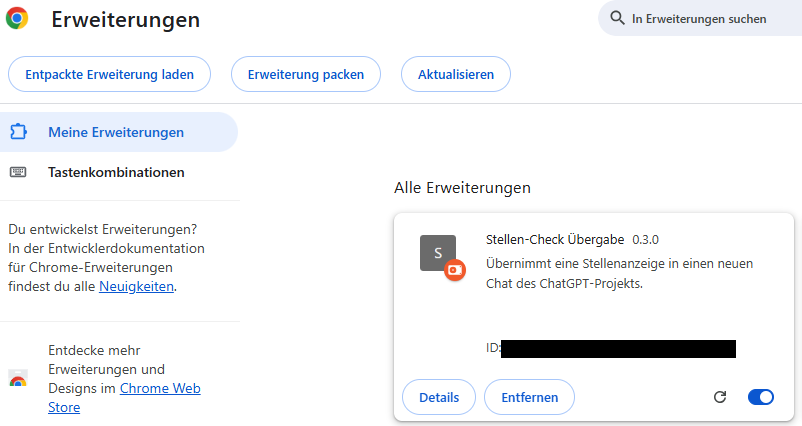
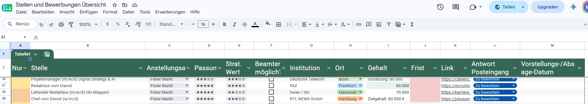

Neben meiner Weiterbildung bei Skilldrops scanne ich aktuell aktiv den Stellenmarkt. Ich will mich dabei nicht künstlich einschränken und so hat sich ein recht großes Portfolio an Anlaufstellen für meine Recherche ergeben. Job-Börsen, Unternehmensseiten, Social Media-Plattformen, nationale und internationale Behördenseiten und ebensolche Stellenportale bieten dabei eine Fülle an Informationen zu jeder Stelle. Manche Stellenbeschreibungen sind glasklar, manche verklausuliert, manche erschlagen den Interessenten aber auch einfach mit Informationen. Das brachte mich schon lange auf die Idee, einen kleinen KI-gestützten Check jeder für mich sinnvoll klingenden Stelle zu erstellen. Dafür habe ich ein ChatGPT-Projekt erstellt und dem LLM einige Anweisungen gegeben, wie ein solcher Stellen-Check auszusehen hat, welche Daten aufgeschlüsselt, welche zusammengefasst und welche in Beziehung zu meinen Daten gebracht und bewertet werden müssen. Der Workflow lief dabei folgendermaßen:
- Ich kopierte die URL der Stellenausschreibung und gab sie ChatGPT mit dem Befehl zum Stellen-Check.
- Falls die KI die URL nicht oder nur teilweise lesen konnte - und das passiert öfter als man denkt -, erstellte ich einen Screenshot oder eine PDF der Stelle und lud sie in den Chat.
- Aus der Auswertung übernahm ich einige standardisierte Werte und übertrug diese zusammen mit den Stellen-Daten (Name, Unternehmen, Deadline...) in eine Google Tabelle ein, in der ich die Stellen sammelte und für den Bewerbungsablauf priorisierte.
Ich kopierte also Daten. Immer wieder die gleichen Daten. Oft mehrmals pro Tag, meistens, ohne meinen Kopf zu benutzen. Da ich aktuell meine zweite Version meines Portfolio-Trackers auf die Seite gesetzt habe und ich in diesem Projekt eine kleine Pause einlegen wollte, dachte ich, dass jetzt die Zeit für die Automatisierung sei.
Browser-Plugin statt Make, n8n und Airtable
Machen wir's kurz. Die Entwicklung der Automatisierung hat exakt 2 Stunden und 8 Minuten gedauert. Dabei habe ich mit Codex gearbeitet und den künstlichen Coder zum Start von meiner Idee überzeugt, dass ich das gesamte Projekt ohne Make, n8n und andere große Tools erledigt haben will. Was wir entwickelt haben, beschreibt die KI so:
“Eine Chrome-Erweiterung nach Manifest V3 erfasst die URL und einen aus mehreren Ansichten zusammengesetzten Ganzseiten-Screenshot einer Stellenanzeige. Anschließend öffnet sie einen neuen Chat in einem definierten ChatGPT-Projekt und befüllt den Prompt, ohne ihn automatisch abzusenden. Ein dort hinterlegter Skill analysiert Anzeige und Bewerberprofil und liefert neben dem Bericht einen validen JSON-Datenblock. Ein Content-Script liest diesen Block aus der ChatGPT-Seite, validiert und normalisiert die Felder und übergibt sie Base64-kodiert an eine als Web-App bereitgestellte Google-Apps-Script-Anwendung. Nach einer Kontrollansicht fügt das Script eine neue, formatierte Zeile an der passenden Position einer Google-Sheets-Tabelle ein. Bestehende Datensätze werden nicht überschrieben.”

Während sich Codex um die 300 Zeilen Code für das Apps Script und das unter 1 MB kleine Browser-Plugin gekümmert hat, habe ich meinen Stellen-Check bei ChatGPT in einen Skill verwandelt. Damit sind die Regeln jetzt nicht mehr auf das Projekt beschränkt und ich konnte einen festen Datenblock einbauen, der für die Übergabe an die Google-Tabelle nötig war.
Fehler, Feinschliff und Erkenntnisse
Die Fehlersuche und der Feinschliff haben rund 30 Minuten gekostet. Nun läuft die Automatisierung rund, stabil und robust für geschätzt rund 90 Prozent der Stellenanzeigen. Grenzbereiche wie unlesbare Screenshots, weil die Stellenanzeige auf mehreren Seiten verteilt oder ungünstig von Werbung oder Pop-Ups verdeckt wird, können so nicht abgedeckt werden. Genauso funktioniert das System praktisch nur lokal und besitzt noch keine Einbindung von Jobbenachrichtigungen per Mail. Als dritte Schwäche zeigt sich die Eintragung des Arbeitsortes in die Stellentabelle. Dort können keine neuen Namen in die Spaltenauswahl eingerichtet werden. Somit sind Stellen, die in Städten verfügbar sind, die bisher noch nicht per Hand in das Dropdown eingetragen wurden, zwar eingetragen, zeigen jedoch einen Fehler in der Tabelle. Die Schwächen sind jedoch zu verdauen, da die Automatisierung sich bei der Zeitersparnis wohl nach rund zehn Tagen bezahlt gemacht hat.

Viel wichtiger als die gesparte Zeit ist mir aber die Erkenntnis, dass es nicht immer eine große grafisch schick dargestellte Make-Automatisierung und eine Airtable-Anbindung sein muss. Oft genügen viel kleinere Tools, die in wenigen Stunden oder gar Minuten einsatzbereit sind, um alltägliche Aufgaben zu automatisieren. Wichtig ist, dass man diese Aufgaben erkennt und eine schlanke Lösung ausprobiert. Wenn diese schon fast alles abdeckt, spart man vielleicht mehr Zeit und Geld, als es zum Start des Projekts aussieht.